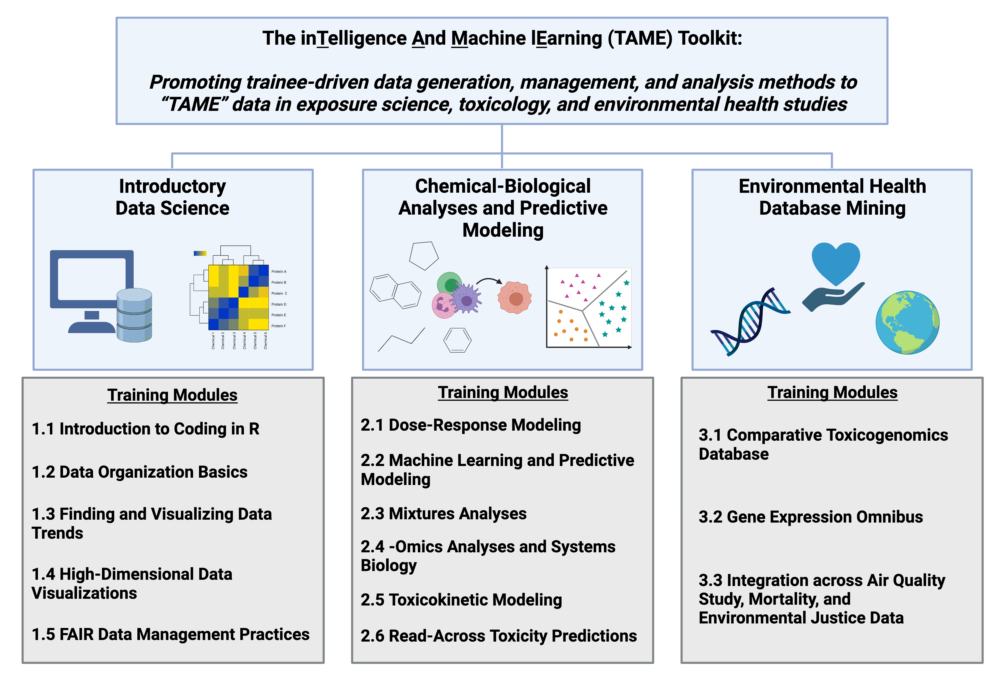

The inTelligence And Machine lEarning (TAME) Toolkit for Introductory Data Science, Chemical-Biological Analyses, Predictive Modeling, and Database Mining for Environmental Health Research
Preface
Background
Research in exposure science, toxicology, and environmental health is becoming increasingly reliant upon data science and computational methods that can more efficiently extract information from complex datasets. These methods can be leveraged to better identify relationships between exposures to chemicals in the environment and human disease outcomes. Still, there remains a critical gap surrounding the training of researchers on these in silico methods.
Objectives
We aimed to address this critical gap by developing the inTelligence And Machine lEarning (TAME) Toolkit, promoting trainee-driven data generation, management, and analysis methods to “TAME” data in environmental health studies. This toolkit encompasses training modules, organized as chapters within this Github Bookdown site. All underlying code (in RMarkdown), input files, and imported graphics for these modules can be found at the parent UNC-SRP Github Page.
Module Development Overview
Training modules were developed to provide applications-driven examples of data organization and analysis methods that can be used to address environmental health questions. Target audiences for these modules include students and professionals in academia, government, and industry that are interested in expanding their skillset. Modules were developed by study coauthors using annotated script formatted for R/RStudio coding language and interface and were organized into three chapters. The first group of modules focused on introductory data science, which included the following topics: setting up R/RStudio and coding in the R environment; data organization basics; finding and visualizing data trends; high-dimensional data visualizations with heat maps; and Findability, Accessibility, Interoperability, and Reusability (FAIR) data management practices. The second chapter of modules incorporated chemical-biological analyses and predictive modeling, spanning the following methods: dose-response modeling; machine learning and predictive modeling; mixtures analyses; -omics analyses; toxicokinetic modeling; and read-across toxicity predictions. The last chapter of modules was organized to provide examples on environmental health database mining and integration, including chemical exposure, health outcome, and environmental justice data.
The overall organization of this TAME toolkit is summarized below. Modules are organized into three chapters, that are listed on the left side of this website.

Concluding Remarks
Together, this valuable resource provides unique opportunities to obtain introductory-level training on current data analysis methods applicable to 21st century exposure science, toxicology, and environmental health. These modules serve as applications-based examples on how to “TAME” data within the environmental health research field, expanding the toolbox for career development and cross-training of scientists in multiple specialties, as well as supporting the next generation of data scientists.
Funding
This study was supported by the National Institutes of Health (NIH) from the National Institute of Environmental Health Sciences, including the following grant funds and associated programs:
P42ES031007: The University of North Carolina (UNC)-Superfund Research Program (SRP) seeks to develop new solutions for reducing exposure to inorganic arsenic and prevent arsenic-induced diabetes through mechanistic and translational research. The UNC-SRP is Directed by Dr. Rebecca C. Fry.
The UNC-SRP Data Analysis and Management Core (UNC-SRP-DMAC) provides the UNC-SRP with critical expertise in bioinformatics, statistics, data management, and data integration. Dr. Julia E. Rager is a Leader of the UNC-SRP-DMAC.
T32ES007126: The UNC Curriculum in Toxicology and Environmental Medicine (CiTEM) seeks to provide a cutting edge research and mentoring environment to train students and postdoctoral fellows in environmental health and toxicology. Towards this goal, the CiTEM has a T32 Training Program for Pre- and Postdoctoral Training in Toxicology to support the development of future investigators in environmental health and toxicology. This training program has received supplement funds to expand training efforts centered on data management and data science practices to address current health issues in toxicology and environmental science. The UNC CiTEM is Directed by Dr. Ilona Jaspers.

Support was additionally provided through the Institute for Environmental Health Solutions (IEHS) at the University of North Carolina (UNC) Gillings School of Global Public Health. The IEHS is aimed at protecting those who are particularly vulnerable to diseases caused by environmental factors, putting solutions directly into the hands of individuals and communities of North Carolina and beyond. The IEHS is Directed by Dr. Rebecca C. Fry.